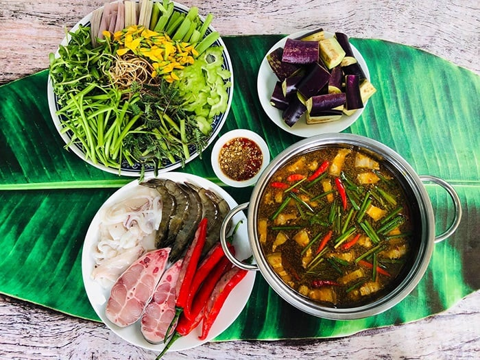

1.Sữa chua trân châu Hạ Long-Quảng Ninh
Sữa chua trân châu Hạ Long là đặc sản nổi tiếng của thành phố kỳ quan. Món ăn này thu hút thực khách bởi sự kết hợp hài hòa giữa vị dẻo mịn, thanh mát của sữa chua cùng độ dẻo dai của trân châu và vị béo ngậy của nước cốt dừa. Tất cả được hòa quyện tạo nên hương vị thơm ngon khó cưỡng. .
2. Bún Cay Hải Phòng
Bún cá Hải Phòng là một đặc sản Việt Nam có sự kết hợp hài hòa giữa hương vị biển cả và đồng nội. Món ăn này đại diện cho ẩm thực đất cảng với hương vị ngọt thanh của nước dùng ninh từ đầu cá, xương cá và xương heo.
Món bún cá cay đặc sản Hải Phòng còn được nấu từ chả viên, cá trắm đồng chiên giòn ăn kèm rau sống, hoa chuối thái nhỏ và dọc mùng thanh mát. Khi ăn, thực khách sẽ thêm chút tương ớt, nước mắm me để tạo vị chua cay hấp dẫn.
3. Bánh canh ghẹ-Vũng Tàu
Về miền Nam, bạn đừng bỏ qua món bánh canh ghẹ Vũng Tàu bổ dưỡng, mang trọn hương vị thơm ngon, mát lành của biển cả. Bánh canh có sợi to với độ dai mềm vừa phải, ghẹ chắc thịt, ngọt thanh, ăn cùng nước dùng thơm phức sền sệt. Món ăn được dùng khi nóng, kèm thêm rau thơm, hạt tiêu đậm vị sẽ khiến thực khách nhớ mãi không thôi.
4. Banhs tráng trộn -Sài Gòn
CBánh tráng trộn là món ăn vặt khiến nhiều người mê mẩn và nghiện lúc nào không hay. Sợi bánh tráng dai mềm trộn cùng bò khô, khô gà, đậu phộng, xoài xanh, rau răm và nước sốt đậm đà.
Tại Sài Gòn, đặc sản Việt Nam này có mặt ở khắp nẻo đường, hàng quán và được biến tấu với nhiều hương vị siêu hấp dẫn như: bánh tráng trộn tóp mỡ, trộn sa tế, bánh tráng bơ,... Chính vì thế mà món bánh tráng trộn có thể chiều lòng và chinh phục khẩu vị của mọi thực khách..
5. Thằn lằn núi Bà Đen -Tây Ninh
Ở núi Bà Đen Tây Ninh có một loại thằn lằn hình thù khác lạ và được chế biến thành nhiều món đặc sản Việt Nam thơm ngon, bổ dưỡng. Thằn lằn núi Tây Ninh có thịt khá dai, thơm ngọt và được xem là bài thuốc quý giúp bồi bổ sức khỏe, cải thiện chứng chán ăn, mệt mỏi, đau nhức xương khớp.
Người dân Tây Ninh thường chế biến thằn lằn thành nhiều món ăn độc đáo với hương vị đặc trưng như: thằn lằn xào lá lốt ăn kèm bánh tráng, thằn lằn chiên xù, cháo đậu xanh thằn lằn,...
6. Gỏi cá trích -Phú Quốc
Gỏi cá trích Phú Quốc được đánh giá là đặc sản Việt Nam số 1 tại vùng biển đảo. Món ăn là sự kết hợp hài hòa của những lát thịt cá tươi sống, thơm ngọt cùng nhiều loại rau thanh mát, vị bùi bùi của lạc rang, dừa nạo và nước sốt đậm đà. Gỏi cá trích được ăn cùng bánh tráng và thứ nước chấm đặc trưng được pha chế theo công thức bí truyền của người dân đảo ngọc.
7. Lẩu mắm-Cần Thơ
Thật thiếu sót nếu đến miền Tây mà bạn chưa thử qua lẩu mắm - món ăn độc đáo, đậm đà hương vị miền sông nước và thể hiện rõ nét văn hóa ẩm thực Nam Bộ. Nước dùng lẩu mắm được nấu từ mắm cá linh cùng rất nhiều nguyên liệu khác như: thịt heo, cá, tôm, mực,...
Món lẩu được ăn kèm với bún cùng các loại rau dân dã như: bông điên điển, rau muống, bông súng, rau nhút, hoa chuối,... Món ăn đặc sản Việt Nam này gây ấn tượng mạnh mẽ bởi hương vị thơm nồng đặc trưng của mắm cá linh, vị mặn ngọt đậm đà cùng nhiều loại thịt cá, rau hấp dẫn.

8.Bún cá-Nha Trang
Bún cá Nha Trang là món ngon đặc sản của tỉnh Khánh Hòa với hương vị đặc biệt khó nhầm lẫn. Món bún có nước dùng trong, ngọt thanh, hương vị đậm đà của chả cá giòn dai. Bún cá là sự hòa quyện tuyệt vời của màu sắc và hương vị của nhiều loại nguyên liệu như: bún, chả cá hấp, chả chiên, chả dầm, sứa tươi và nhiều loại rau ăn kèm. Đây là món ăn đặc sản Việt Nam vô cùng hấp dẫn, có thể làm vừa lòng mọi thực khách khó tính trong hành trình du lịch Nha Trang.
9.Súp lươn-Nghệ An
Tuy là một món ăn dân dã nhưng súp lươn Nghệ An khiến nhiều thực khách mê mẩn với hương vị đặc biệt. Súp lươn vinh dự là đặc sản Việt Nam được CNN bình chọn là một trong 7 món ăn sáng ngon nhất thế giới. Món ăn gây ấn tượng với thịt lươn chắc ngọt hòa quyện cùng phần nước súp béo nhẹ và vị cay nồng thơm phức của hành tăm, nghệ, tiêu và ớt. Du lịch Nghệ An, bạn sẽ dễ dàng bắt gặp rất nhiều hàng quán bán súp lươn trên đường và các gánh hàng bên góc phố.
10. Nem chua -Thanh Hóa
Nếu có dịp đến Thanh Hóa, bạn đừng bỏ qua cơ hội thưởng thức món nem chua nổi tiếng. Nem chua Thanh Hóa có hình trụ, vị giòn ngon của bì lợn, vị chua của thịt lên men và vị cay nồng của tỏi ớt,...
Người dân xứ Thanh còn khéo léo kết hợp thêm lá đinh lăng tạo nên vị thơm nồng độc đáo. Đặc sản Việt Nam này được chế biến theo công thức gia truyền với thời gian ủ linh hoạt theo mùa để tạo nên vị chua vừa đủ. Nhờ dư vị khó quên, nem chua là thức quà được nhiều du khách lựa chọn sau chuyến du lịch Thanh Hóa.